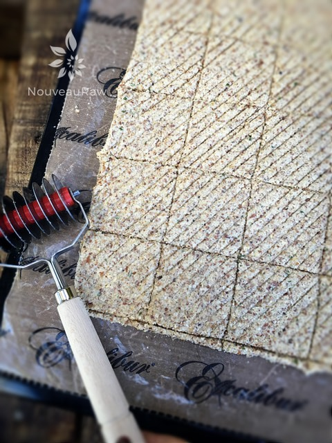
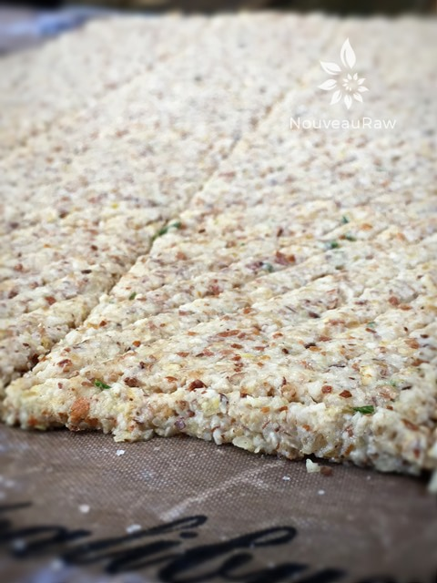
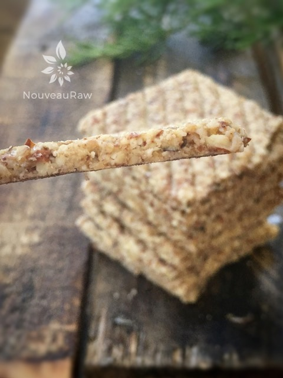

Rosemary Almond Crackers

raw / vegan / gluten-free
My girlfriend Tracy popped over with some fresh rosemary from her garden and asked me to create something with it. So, I went into the kitchen to play and after some inspired work and lots of fun, I came up with these Rosemary Almond Crackers.
These savory crackers are made from a simple dough that is rolled thin and dehydrated to crunchy perfection. Enriched with fresh rosemary, these hardy crackers boast an exceptional flavor and crunch.
There is something quite amazing when it comes to fresh herbs. But if rosemary isn’t your thing, you could easily personalize this cracker by changing out the herbs to the desired taste.
The rosemary isn’t overpowering so it will pair well with just about any spread, dip, or cheese.
You will be surprised as to how quickly this recipe goes together. Everything goes in the food processor, blitz it together, and roll it out into crackers. The hardest part is waiting for them to dehydrate. :) Please enjoy this recipe. Blessings, amie sue
Ingredients:
Yields 40 crackers
Preparation:
- In the food processor, fitted with the “S” blade combine the almond meal, oats, ground flax, nutritional yeast, rosemary, salt, and paper. Process until the oats are broken down and all flavors are well mixed
- Add 3/4 cup of water and stevia, process until it creates a batter-like texture. If needed add a little more water until it reaches the right consistency.
- Divide the batter in half and roll it out 1/4” thick in between two non-stick sheets.
- Remove the top non-stick sheet and flip the crackers over onto the mesh sheet that comes with the dehydrator.
- Score into desired shapes and sizes.
- Sprinkle coarse salt on top.
- Dehydrate at 145 degrees (F) for 1 hour, then reduce to 115 degrees (F) for roughly 12 hours or until dry.
- Store in an airtight container 1-2 weeks.
The Institute of Culinary Ingredients:
- What is Himalayan pink salt and does it really matter? Click (here) to read more about it.
- Are oats gluten-free? Yes, read more about that (here).
- Are oats raw? Yes, they can be found. Click (here) to learn more.
- Do I need to soak and dehydrate oats? Not required but recommended. Click (here) to see why.
- Learn how to grind your own flaxseeds for ultimate freshness and nutrition. Click (here).
Culinary Explanations:
- Why do I start the dehydrator at 145 degrees (F)? Click (here) to learn the reason behind this.
- When working with fresh ingredients it is important to taste test as you build a recipe. Learn why (here).
- Don’t own a dehydrator? Learn how to use your oven (here). I do however truly believe that it is a worthwhile investment. Click (here) to learn what I use.

The batter has been spread and scored into cracker portions. I used this pastry roller to create a fun visual effect. Into the dehydrator it goes.

Just trying to capture the thickness of the batter before it went into the dehydrator.

Thin, sturdy, and crispy. Gotta go… time for some serious snack’n.
© AmieSue.com